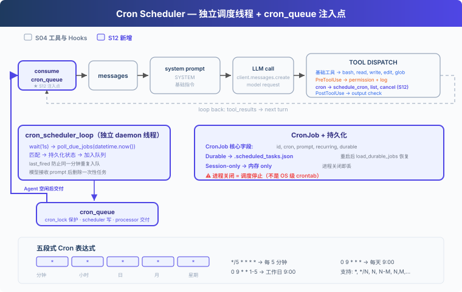

s12: Cron Scheduler — 按时间启动任务
s01 → ... → s10 → s11 → s12 → s13 → ... → s17
问题
S11 解决的是命令开始后的执行方式：耗时的 Bash 命令可以在后台运行。但它不会记录某项工作应该在什么时间开始，也没有组件持续检查当前时间。
对于“每天早上 9 点跑测试”或“每 30 分钟检查 CI 状态”这样的请求，如果只依靠当前的 Agent Loop，用户仍要在每次到点后重新发送 prompt。Harness 需要保存执行时间，到点后把对应的 prompt 加入待执行队列，再在 Agent 空闲时交给 Agent Loop。
解决方案

假设 Agent 注册了下面这项任务：
cron: 0 9 * * *
prompt: run tests
调度线程在本地时间 09:00 匹配到这项任务，把 [Scheduled] run tests 放进 cron_queue。队列处理线程等到 Agent 空闲后启动一轮 Agent Loop，模型随后可以调用 Bash 执行测试。
S12 的代码保留 S04 的五个基础工具和 Hooks，再增加 schedule_cron、list_crons、cancel_cron。它不包含 S11 的后台命令，因为这里传递的是一条待执行的 prompt，而不是某个后台命令的执行结果。
工作原理
CronJob 保存什么
@dataclass
class CronJob:
id: str
cron: str
prompt: str
recurring: bool
durable: bool
pending_delivery: bool = False
last_fired: str | None = None
cron 决定何时触发，prompt 是触发后交给 Agent 的任务。pending_delivery 表示任务已经到期但尚未被模型接收，last_fired 防止同一分钟重复入队。
五段式 Cron 表达式
分钟 小时 日 月 星期
* * * * * 每分钟
0 9 * * * 每天 09:00
*/5 * * * * 每 5 分钟
0 9 * * 1-5 工作日 09:00
本章支持 *、*/N、N、N-M 和 N,M,...。schedule_job() 会在保存任务前调用 validate_cron()，拒绝字段数量或取值范围不正确的表达式。
到期后先入队
调度线程每秒读取一次本地时间。表达式匹配且任务在当前分钟尚未触发时，_enqueue_due_job() 先保存 pending_delivery 和 last_fired，再把任务放进内存队列：
def poll_due_jobs(moment: datetime):
minute_marker = moment.strftime("%Y-%m-%d %H:%M")
with cron_lock:
for job in list(scheduled_jobs.values()):
if job.pending_delivery or job.last_fired == minute_marker:
continue
if cron_matches(job.cron, moment):
_enqueue_due_job(job, minute_marker)
持久化失败时，_enqueue_due_job() 会恢复原来的状态，不会把只存在于内存中的任务暴露给队列处理线程。
Agent 空闲后再交付
queue_processor_loop() 不负责判断时间。它只检查队列，并用 agent_lock 避免定时任务与用户正在进行的回合同时修改会话：
def queue_processor_loop(stop_event=RUNTIME_STOP):
while not stop_event.wait(0.2):
if not has_cron_queue() or not agent_lock.acquire(blocking=False):
continue
try:
if has_cron_queue():
run_agent_turn_locked()
finally:
agent_lock.release()
Agent Loop 从队列取出到期任务，并把它们作为新的用户消息追加：
fired = consume_cron_queue()
for job in fired:
messages.append({"role": "user", "content": f"[Scheduled] {job.prompt}"})
模型调用失败时，这些消息会从当前会话中移除，任务重新放回队列。模型成功接收后，一次性任务会被删除，周期任务则清除 pending_delivery，等待下一次匹配。
持久化边界
| 模式 | 保存位置 | 进程重启后 |
|---|---|---|
durable=True |
.scheduled_tasks.json |
重新加载 |
durable=False |
内存 | 消失 |
.scheduled_tasks.json 使用临时文件和 os.replace() 更新。文件损坏时，启动日志会报告错误，不会静默忽略。
这里采用至少一次交付：进程若在模型接收 prompt 后、确认状态写回前退出，同一任务可能在重启后再次交付。
运行边界
- 调度器使用 Agent 进程的本地时间。
- Agent 进程关闭后，调度线程也会停止；
durable只保留任务定义。 - 重启时只恢复任务，不补跑停机期间错过的时间点。
- 定时回合运行在队列处理线程中。需要交互确认的工具调用会被拒绝，不会与主终端同时读取输入。
- 调度线程和队列处理线程只在运行 CLI 时启动，导入
code.py不会启动后台线程。
需要在 Agent 关闭时仍按时执行任务，应使用系统的 crontab、systemd timer 或其他外部调度服务。
试一下
cd learn-claude-code
python s12_cron_scheduler/code.py
可以依次输入：
Schedule "run date" every 2 minutes and keep it after restart.List all cron jobs.Cancel the cron job you just created.
运行时可以查看 .scheduled_tasks.json，并观察到期后出现的 [Scheduled] run date 消息。测试一分钟级任务时，Agent 进程需要保持运行。
接下来
调度器可以在指定时间启动一轮 Agent Loop，但这一轮仍由一个 Agent 处理。面对需要同时调查多个模块、并行修改并汇总结果的任务，Harness 还需要把工作分给多个 Agent，并收集各自的执行结果。
s13 Agent Teams → Lead 分配任务，队友独立执行，再通过收件箱返回结果。